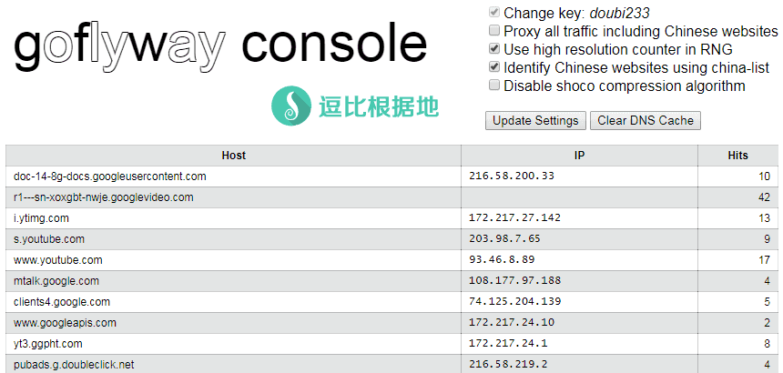
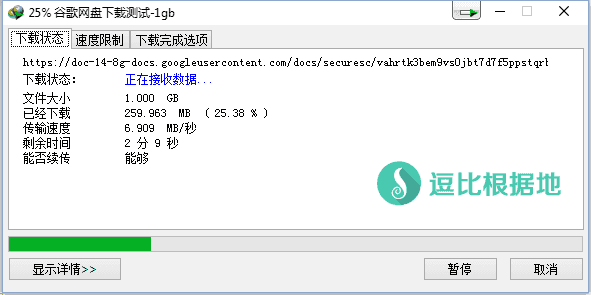
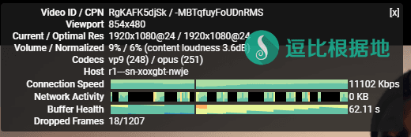
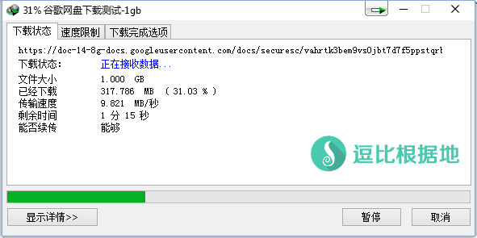

前几天突然看到很多人在讨论这个HTTP代理工具，一开始我以为是单纯的HTTP代理，在 Github 了解后，看起来是针对header关键信息加密(如域名)等等简单的加密方式来骗过GFW的明文嗅探，同时因为HTTP的轻量化也保证了高效的传输数据，虽然现在这个项目才刚刚开始，但是在GFW未注意到之前（根据特征封锁），效果应该不错。
Github 项目地址：https://github.com/coyove/goflyway
服务端一键脚本：『原创』Go语言轻量化 HTTP Tunnel 代理工具 —— GoFlyway 一键安装管理脚本
客户端辅助工具：『原创』更方便的Windows系统 Goflyway 客户端 —— Goflyway Tools
与单纯的HTTP代理不同的是，因为这个工具会对一些内容加密和交换密匙，所以需要特定的客户端。
其他 Goflyway 教程请看：https://doub.io/tag/goflyway/
服务端配置
这里以 Linux系统为例。
注意：GoFlyway 的客户端和服务端都是一个文件，也就是本文章的服务端配置和客户端配置都是可以互相转换的，只是取决于运行GoFlyway的参数有没有 -up=xxx:xxx ，如果有就是客户端模式，如果没有就是服务端模式。
下载安装
服务端使用方法
客户端配置
这里以 Windows系统为例。
客户端辅助工具：『原创』更方便的Windows系统 Goflyway 客户端 —— Goflyway Tools
注意：GoFlyway 的客户端和服务端都是一个文件，也就是本文章的服务端配置和客户端配置都是可以互相转换的，只是取决于运行GoFlyway的参数有没有 -up=xxx:xxx ，如果有就是客户端模式，如果没有就是服务端模式。
下载安装
客户端使用方法
制作启动脚本
使用步骤
注意：下面以客户端本地监听端口 8100 为例，如果你设置了其他的，那么自己替换。
要使流量走GoFlyway，只需要在需要的软件中设置 HTTP代理 127.0.0.1 8100即可。
比如，如果浏览器要走GoFlyway代理，那么打开系统代理设置（或者浏览器内相关代理设置），设置代理服务器 地址：127.0.0.1，端口：8100，并一路确定即可。
如果你是Chrome浏览器并且使用了 SwitchyOmega （点击查看新手使用教程）代理管理扩展，那么进入扩展选项页面：
新建情景模式... -> 情景模式名称：GoFlyway -> 情景模式类型：代理服务器 -> 然后设置 代理协议：HTTP，代理服务器：127.0.0.1，代理端口：8100，然后点击左下角的 应用选项 按钮即可。
接着打开谷歌试试：https://www.google.com
客户端Web控制面板
客户端运行后可以通过访问 http://127.0.0.1:8100 （8100是客户端本地监听端口，就是客户端参数 -l=":8100"，自己对应的改）来查看和设置一些GoFlyway选项。
右侧的几个选项分别是：
- 更改密码: doubi233（doubi233 文字可以点击修改的）
- 代理所有流量（包括国内网站）
- 在RNG中使用高分辨率计数器（不懂）
- 使用 China-list 识别中文网站（就是 chinalist.txt 文件）
- 禁用 shoco 压缩算法（不懂）
设置选项下方的两个按钮分别是：更新设置、清除DNS缓存。
注意：在修改完上面的几个设置选项后（包括密码），都需要点击一下 Update Settings (更新设置)按钮才会生效！

[/toggle]
更多使用姿势请看Github WIKI：https://github.com/coyove/goflyway/wiki/使用教程/
速度对比
我在一台美国小鸡上面 同时安装了 ShadowsocksR 和 GoFlyway ，测试速度如下。
注意：以下测速仅供参考，一些地区可能HTTP代理会限制严格，情况不一而论。
ShadowsocksR
加密方式：aes-128-ctr、协议插件：auth_aes128_md5、混淆插件：tls1.2_ticket_auth
YouTube速度测试（单线程）：
注意：因为我这边联通对海外的服务器单线程限速 8Mbps+-，所以YouTube这类单线程都因为很容易跑到QOS上限而看不到什么大概区别。

IDM全速下载（多线程）：
速度大概在 5MB/s ~ 7MB/s 之间波动，有时候也会跑到 8、9MB/s，不过基本平均速度在 6+MB/s 。

GoFlyway
YouTube速度测试（单线程）：
注意：因为我这边联通对海外的服务器单线程限速 8Mbps+-，所以YouTube这类单线程都因为很容易跑到QOS上限而看不到什么大概区别。

IDM全速下载（多线程）：
测试速度很快就突破到 9MB/s了，多次测试发现基本稳定到 8.5MB/s ~ 9.5MB/s 之间。

从上面的测速对比看，因为我这边被联通单线程限速，所以单线程很容易跑到QOS上限，速度上面没什么差别，而在多线程下载上，因为突破了联通的单线程QOS限速，所以可以明显看出速度差距，GoFlyway因为HTTP轻量化和加密较SSR相比简单很多，并且没有混淆等损耗速度，所以在速度上面占据了优势。
最后总结
在墙没有注意到这个HTTP工具（根据特征封锁）或者运营商真的HTTP协议QOS的前提下，这个软件在速度方面还是很有优势的，不过毕竟还是太年轻，以后会更好。
转载请超链接注明：逗比根据地 » 一个由Go语言编写的轻量化 HTTP Tunnel 代理工具 —— GoFlyway
责任声明：本站一切资源仅用作交流学习，请勿用作商业或违法行为！如造成任何后果，本站概不负责！


端口被占用，使用 netstat -lntp 命令查看是哪个进程占用了端口。
我网站分享的免费 Goflyway 账号的密码暂时都是 doub.io ，服务器IP和端口都写了。
然后使用TCPing测试一下域名+端口是否通顺正常。
是否 8100 端口被占用了？检查一下。如果正常，那么你只能去 Github 联系客服解决了。
如果有必要，请 Telegram群组(TG使用教程)私聊联系我讨论解决。
403正常，必须直接访问图片才能显示。
还有哪些好的工具可以用？我不知道，我目前依然使用ShadowsocksR。